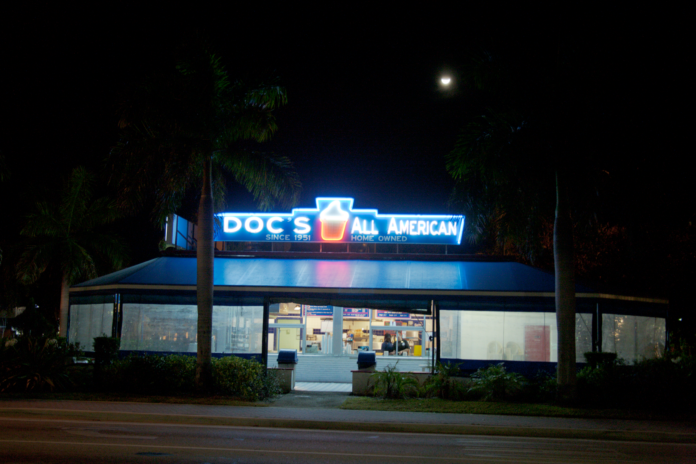

A Low-cost Deep Learning Model for Real-time Surveillance Vi deo Defogging and Low Light E nhancement
Keywords:
Defogging
Low light enhancement
Lightweight
Real time
Surveillance video
Low-cost devices
Abstract
To achieve better visual quality in tasks such as monitoring and autonomous driving, a variety of image enhancement techniques are applied to camera systems. Among these, low light enhancement and defogging are hot topics in image enhancement research. In this paper, we propose a model that achieves low light image enhancement and defogging with minimal computational cost, while also being capable of real-time high resolution video processing. This model can be widely deployed in cost-effective autonomous driving systems, surveillance equipment, and mobile devices. Our approach aims to improve visual clarity while maintaining cost-efficiency.
Defogging Result


Low Light Enhancement Result